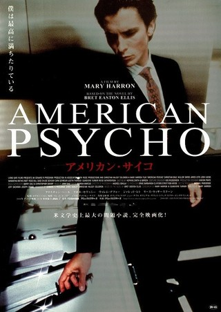

アメリカンサイコ
作品情報
2001/アメリカ
監督: メアリー・ハロン
脚本: メアリー・ハロン
出演: クリスチャン・ベール
あらすじ:
1980年代、NY。27歳のパトリック・ベイトマン（クリスチャン・ベール）は、ウォール街の一流企業で働くエリート・ビジネスマン。高級マンションに住み、エクササイズに励み、ブランド物を買い求め、完璧な生活を求めている。婚約者イヴリン（リース・ウィザースプーン）も愛人コートニー（サマンサ・マティス）もいたし、秘書のジーン（クロエ・セヴィニー）は密かに彼に恋い焦がれていたが彼の心はどこか虚ろで、目下のライバル、ポール・アレン（ジャレッド・レト）に会うたび苛立ちは募るばかり。そして、抑えきれない感情に突き動かされたベイトマンは、アレンを自宅に呼び出し殺害した。そんなベイトマンの前に、失踪したとされたポールのゆくえを調査している人物、キンボール（ウィレム・デフォー）が現われ、ベイトマンの心に不吉な影がよぎり始める。[moviewaker]
各部員によるレビュー及び短評
| ぽこすけ | 65点 | |
|---|---|---|
| ねこねこ | ||
| あおい | 84点 | 裸チェーンソーが最高だった |